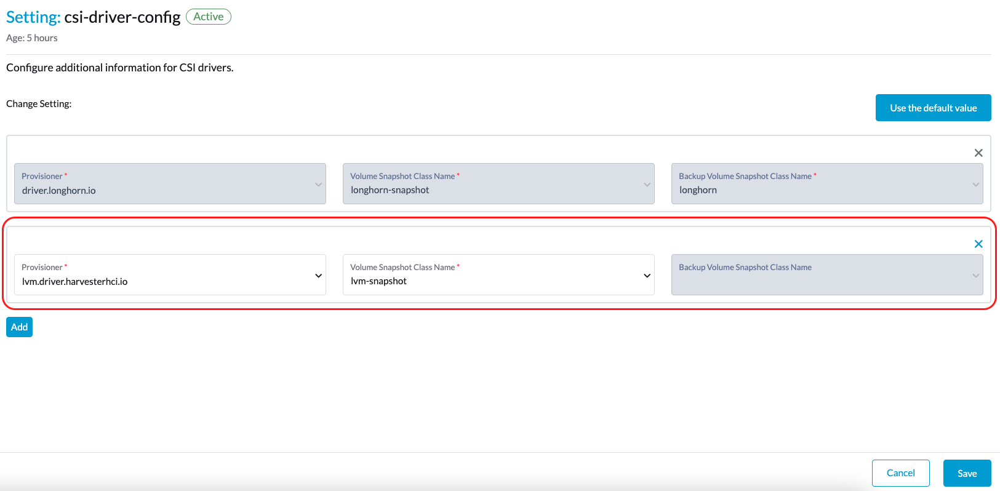
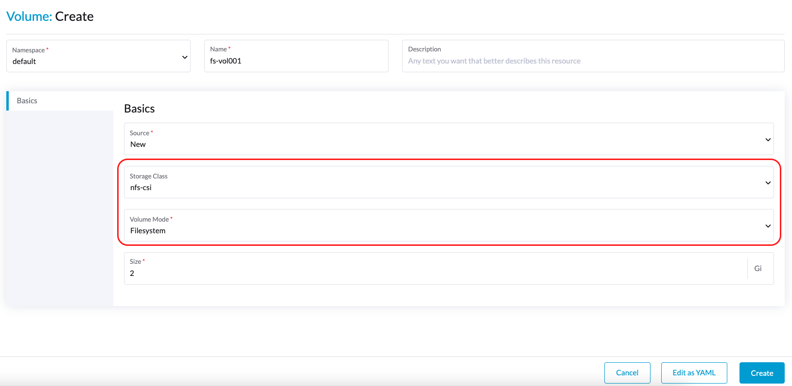

Unterstützung für Speicher von Drittanbietern
SUSE Virtualization unterstützt die Bereitstellung von Root-Volumes und Daten-Volumes unter Verwendung externer Container Storage Interface (CSI)-Treiber. Diese Verbesserung ermöglicht es Ihnen, Treiber auszuwählen, die spezifische Anforderungen erfüllen, wie z.B. Leistungsoptimierung oder nahtlose Integration mit bestehenden internen Speicherlösungen.
Das SUSE Virtualization Team hat die folgenden CSI-Treiber validiert:
-
Longhorn V2 Daten-Engine:
driver.longhorn.io -
LVM:
lvm.driver.harvesterhci.io -
NFS:
nfs.csi.k8s.io -
Rook (RADOS-Blockgerät):
rook-ceph.rbd.csi.ceph.com
Diese validierten CSI-Treiber haben die folgenden Fähigkeiten:
| Speicherlösung | VM-Image | VM-Root-Disk | VM-Daten-Disk | Volume-Export zu VM-Image | VM-Vorlagengenerator | VM-Live-Migration | VM Snapshot | VM-Backup |
|---|---|---|---|---|---|---|---|---|
Longhorn V2 Data Engine |
✔ |
✔ |
✔ |
✔ |
✔ |
✔ |
✔ |
✔ |
LVM |
✔ |
✔ |
✔ |
✔ |
✔ |
✖ |
✔ |
✖ |
NFS |
✔ |
✔ |
✔ |
✔ |
✔ |
✔ |
✖ |
✖ |
Rook (RADOS-Blockgerät) |
✔ |
✔ |
✔ |
✔ |
✔ |
✔ |
✔ |
✖ |
|
Die Unterstützung für Speicher von Drittanbietern entspricht der Unterstützung für die Bereitstellung von Root-Volumes und Daten-Volumes unter Verwendung externer Container Storage Interface (CSI) Treiber. Das bedeutet, dass Speicheranbieter ihre Speichergeräte mit SUSE Virtualization validieren können, um eine größere Interoperabilität sicherzustellen. Informationen über unternehmensweite Speicherlösungen, die als kompatibel mit SUSE Virtualization zertifiziert sind, finden Sie in der SUSE Rancher Prime Dokumentation, die über das SUSE Customer Center zugänglich ist. |
Voraussetzungen
Um sicherzustellen, dass SUSE Virtualization gut funktioniert, verwenden Sie CSI-Treiber, die die folgenden Fähigkeiten unterstützen:
-
Volumenerweiterung (Online-Größenänderung)
-
Snapshot-Erstellung (Volumen- und virtuelle Maschinen-Snapshots)
-
Klonen (Volumen- und virtuelle Maschinen-Klone)
-
Verwendung von Read-Write-Many (RWX)-Volumes für Live Migration
Erstellen Sie einen SUSE Virtualization Cluster
Das Betriebssystem von SUSE Virtualization folgt einem unveränderlichen Design, was bedeutet, dass die meisten OS-Dateien nach einem Neustart in ihren vorkonfigurierten Zustand zurückkehren. Daher müssen Sie möglicherweise zusätzliche Konfigurationen vornehmen, bevor Sie den SUSE Virtualization Cluster für Drittanbieter-CSI-Treiber installieren.
Einige CSI-Treiber erfordern zusätzliche persistente Pfade auf dem Host. Sie können diese Pfade zu os.persistent_state_paths hinzufügen.
Einige CSI-Treiber erfordern zusätzliche Softwarepakete auf dem Host. Sie können diese Pakete mit os.after_install_chroot_commands installieren.
|
Ein Upgrade von SUSE Virtualization führt dazu, dass die Änderungen am OS in der |
Installieren Sie den CSI-Treiber
Nach Abschluss der Installation des SUSE Virtualization Clusters verweisen Sie auf Wie kann ich auf die kubeconfig-Datei zugreifen?, um die kubeconfig des Clusters zu erhalten.
Mit der kubeconfig des SUSE Virtualization Clusters können Sie die Drittanbieter-CSI-Treiber in den Cluster installieren, indem Sie die Installationsanweisungen für jeden CSI-Treiber befolgen. Sie müssen auch auf die Dokumentation des CSI-Treibers verweisen, um die StorageClass und VolumeSnapshotClass im SUSE Virtualization-Cluster zu erstellen.
Konfigurieren Sie den SUSE Virtualization-Cluster
Bevor Sie die Funktionen Backup & Snapshot von SUSE Virtualization nutzen können, müssen Sie einige wesentliche Konfigurationen über die Einstellung SUSE Virtualization csi-driver-config vornehmen. Befolgen Sie diese Schritte, um diese Konfigurationen vorzunehmen:
-
Melden Sie sich bei der SUSE Virtualization-UI an und navigieren Sie dann zu Erweiterte Einstellungen →.
-
Suchen und wählen Sie csi-driver-config aus, und wählen Sie dann ⋮ → Einstellung bearbeiten, um auf die Konfigurationsoptionen zuzugreifen.
-
Setzen Sie den Provisioner auf den Drittanbieter-CSI-Treiber in den Einstellungen.
-
Als Nächstes konfigurieren Sie den Volume Snapshot Class Name. Diese Einstellung verweist auf den Namen des
VolumeSnapshotClass, der zum Erstellen von Volume-Snapshots oder VM-Snapshots verwendet wird.

|
Backup funktioniert derzeit nur mit den folgenden:
Wenn Sie andere Speicheranbieter verwenden, können Sie die Konfiguration des Backup VolumeSnapshot Class Name überspringen. Für weitere Informationen siehe Kompatibilität von Virtual Machine Backup. Wenn der StorageClass-Provisioner nicht in der Liste der Provisioner mit Standardzugriffs- und Volumenmodi des CDI enthalten ist, müssen Sie die StorageClass mit |
Verwenden Sie den CSI-Treiber
Sobald der CSI-Treiber installiert und der SUSE Virtualization-Cluster konfiguriert ist, kann eine externe Speicherlösung in Aufgaben verwendet werden, die das Speichermanagement betreffen.
Erstellung von virtuellen Maschinenbildern
Sie können eine externe Speicherlösung verwenden, um virtuelle Maschinenbilder zu speichern und zu verwalten.
Beim Hochladen eines virtuellen Maschinenbildes über die SUSE Virtualization Benutzeroberfläche (Bild → Erstellen) müssen Sie die StorageClass für die externe Speicherlösung im Tab "Speicher" auswählen. Im folgenden Beispiel ist die StorageClass nfs-csi.

SUSE Virtualization speichert das erstellte Bild in der externen Speicherlösung.

Erstellung von virtuellen Maschinen
Ihre virtuellen Maschinen können Root- und Datenvolumes in externem Speicher verwenden.
Beim Erstellen einer virtuellen Maschine über die SUSE Virtualization Benutzeroberfläche (Virtuelle Maschine → Erstellen) müssen Sie die folgenden Aktionen im Tab "Volumes" durchführen:
-
Wählen Sie ein in der externen Speicherlösung gespeichertes virtuelles Maschinenbild aus und konfigurieren Sie die erforderlichen Einstellungen.
-
Fügen Sie ein Datenvolumen hinzu.

Im folgenden Beispiel wird das Root-Volume mit NFS erstellt, und das Datenvolumen wird mit der Longhorn V2 Daten-Engine erstellt.

Erstellung von Volumes
Sie können Volumes in Ihrer externen Speicherlösung erstellen.
Beim Erstellen eines Volumes über die SUSE Virtualization Benutzeroberfläche (Volumes → Erstellen) müssen Sie die folgenden Aktionen durchführen:
-
Speicherklasse: Wählen Sie die Ziel-StorageClass aus (zum Beispiel nfs-csi).
-
Volume-Modus: Wählen Sie den entsprechenden Volume-Modus aus (zum Beispiel Dateisystem).

Weitere Themen
Speicherprofile
Sie können jetzt die CDI-API verwenden, um benutzerdefinierte Speicherprofile zu erstellen, die die Definition von Datenvolumen vereinfachen. Speicherprofile ermöglichen es mehreren Datenvolumen, die gleichen Bereitstellungseinstellungen zu teilen.
Das folgende ist ein Beispiel für ein LVM-Speicherprofil:
apiVersion: cdi.kubevirt.io/v1beta1
kind: StorageProfile
metadata:
name: lvm-node-1-striped
spec:
claimPropertySets:
- accessModes:
- ReadWriteOnce
volumeMode: Block
status:
claimPropertySets:
- accessModes:
- ReadWriteOnce
volumeMode: Block
cloneStrategy: snapshot
dataImportCronSourceFormat: pvc
provisioner: lvm.driver.harvesterhci.io
snapshotClass: lvm-snapshot
storageClass: lvm-node-1-stripedSie können die Felder definieren, um die Standardkonfiguration zu überschreiben. Für weitere Informationen siehe Speicherprofile in der CDI-Dokumentation.
|
Vermeiden Sie es, das Speicherprofil oder CDI direkt zu ändern. Erlauben Sie stattdessen dem SUSE Virtualization Controller, die Konfiguration des Speicherprofils durch die Verwendung von CDI-Anmerkungen zu synchronisieren und zu speichern. |
Nutzungsbeschränkungen
-
Die Unterstützung für Sicherungen ist derzeit auf SUSE Storage Volumes beschränkt. SUSE Virtualization kann keine Sicherungen von Volumes im externen Speicher erstellen.
-
Es gibt eine Einschränkung in der CDI, die verhindert, dass SUSE Virtualization angehängte PVCs in virtuelle Maschinenbilder konvertiert. Stellen Sie vor dem Exportieren eines Volumens im externen Speicher sicher, dass das PVC nicht an Arbeitslasten angehängt ist. Dies verhindert, dass das resultierende Bild im Zustand Exportieren stecken bleibt.

Bereitstellung des NFS-CSI-Treibers
|
Sie können den NFS-CSI-Treiber nur bereitstellen, wenn der NFS-Server bereits installiert und aktiv ist.
Wenn der Server bereits läuft, überprüfen Sie die |
-
Installieren Sie den Treiber mit dem
csi-driver-nfsHelm-Chart.$ helm repo add csi-driver-nfs https://raw.githubusercontent.com/kubernetes-csi/csi-driver-nfs/master/charts $ helm install csi-driver-nfs csi-driver-nfs/csi-driver-nfs --namespace kube-system --version v4.10.0 -
Erstellen Sie die StorageClass für NFS.
Für weitere Informationen zu Parametern siehe Treiberparameter: Verwendung der Storage Class in der Dokumentation des Kubernetes NFS-CSI-Treibers.
apiVersion: storage.k8s.io/v1 kind: StorageClass metadata: name: nfs-csi provisioner: nfs.csi.k8s.io parameters: server: <your-nfs-server-ip> share: <your-nfs-share> # csi.storage.k8s.io/provisioner-secret is only needed for providing mountOptions in DeleteVolume # csi.storage.k8s.io/provisioner-secret-name: "mount-options" # csi.storage.k8s.io/provisioner-secret-namespace: "default" reclaimPolicy: Delete volumeBindingMode: Immediate allowVolumeExpansion: true mountOptions: - nfsvers=4.2Sobald erstellt, können Sie die StorageClass verwenden, um virtuelle Maschinenbilder, Root-Volumes und Datenvolumen zu erstellen.
Bekannte Probleme
1. Unendliche Bilddownload-Schleife
Der Bilddownload-Prozess läuft endlos, wenn die StorageClass für das Bild den LVM-CSI-Treiber verwendet. Dieses Problem hängt mit dem Scratch-Volume zusammen, das von CDI erstellt wird und zur temporären Speicherung der Bilddaten verwendet wird. Wenn das Problem in Ihrer Umgebung auftritt, finden Sie möglicherweise die folgenden Fehlermeldungen in den importer-prime-xxx Pod-Protokollen:
E0418 01:59:51.843459 1 util.go:98] Unable to write file from dataReader: write /scratch/tmpimage: no space left on device
E0418 01:59:51.861235 1 data-processor.go:243] write /scratch/tmpimage: no space left on device
unable to write to file
kubevirt.io/containerized-data-importer/pkg/importer.streamDataToFile
/home/abuild/rpmbuild/BUILD/go/src/kubevirt.io/containerized-data-importer/pkg/importer/util.go:101
kubevirt.io/containerized-data-importer/pkg/importer.(*HTTPDataSource).Transfer
/home/abuild/rpmbuild/BUILD/go/src/kubevirt.io/containerized-data-importer/pkg/importer/http-datasource.go:162
kubevirt.io/containerized-data-importer/pkg/importer.(*DataProcessor).initDefaultPhases.func2
/home/abuild/rpmbuild/BUILD/go/src/kubevirt.io/containerized-data-importer/pkg/importer/data-processor.go:173
kubevirt.io/containerized-data-importer/pkg/importer.(*DataProcessor).ProcessDataWithPause
/home/abuild/rpmbuild/BUILD/go/src/kubevirt.io/containerized-data-importer/pkg/importer/data-processor.go:240
kubevirt.io/containerized-data-importer/pkg/importer.(*DataProcessor).ProcessData
/home/abuild/rpmbuild/BUILD/go/src/kubevirt.io/containerized-data-importer/pkg/importer/data-processor.go:149
main.handleImport
/home/abuild/rpmbuild/BUILD/go/src/kubevirt.io/containerized-data-importer/cmd/cdi-importer/importer.go:188
main.main
/home/abuild/rpmbuild/BUILD/go/src/kubevirt.io/containerized-data-importer/cmd/cdi-importer/importer.go:148
runtime.mainDie Nachricht no space left on device zeigt an, dass das Dateisystem, das mit dem Scratch-Volume erstellt wurde, nicht ausreicht, um die Bilddaten zu speichern. CDI erstellt das Scratch-Volume basierend auf der Größe des Zielvolumes, aber ein gewisser Speicherplatz geht für den Dateisystem-Overhead verloren. Der Standardwert für den Overhead beträgt 0.055 (entspricht 5,5 %), was in den meisten Fällen ausreichend ist. Wenn die Bildgröße jedoch weniger als 1 GB beträgt und die virtuelle Größe sehr nah an der Bildgröße liegt, ist der Standard-Overhead wahrscheinlich unzureichend.
Die Lösung besteht darin, den Dateisystem-Overhead auf 20 % zu erhöhen, indem Sie den folgenden Befehl verwenden:
# kubectl patch cdi cdi --type=merge -p '{"spec":{"config":{"filesystemOverhead":{"global":"0.2"}}}}'Das Bild sollte heruntergeladen werden, sobald der Dateisystem-Overhead erhöht wurde.
|
Die Erhöhung des Overhead-Werts hat keinen Einfluss auf die Größe des PVC des Bildes. Das Scratch-Volume wird gelöscht, nachdem das Bild importiert wurde. |
Verwandtes Problem: #7993 (Siehe diesen Kommentar.)
2. Multipfad-Unterstützung
Der multipathd Dienst ist standardmäßig in SUSE Virtualization deaktiviert. Einige Drittanbieter-CSIs erfordern jedoch möglicherweise, dass Sie den Dienst aktivieren.
Nach der Installation von SUSE Virtualization können Sie multipathd aktivieren und starten, indem Sie sich bei jedem Clusterknoten anmelden und die folgenden Befehle ausführen:
systemctl enable multipathd
systemctl start multipathdAlternativ können Sie eine SUSE® Rancher Prime: OS Manager CloudInit-Datei im /oem Verzeichnis auf jedem Host (zum Beispiel /oem/99-start-multipathd.yaml) mit folgendem Inhalt erstellen:
stages:
default:
- name: "start multipathd"
systemctl:
enable:
- multipathd
start:
- multipathdDieser Prozess kann über den Harvester cluster mithilfe einer CloudInit CRD automatisiert werden.
apiVersion: node.harvesterhci.io/v1beta1
kind: CloudInit
metadata:
name: start-mutlitpathd
spec:
matchSelector:
harvesterhci.io/managed: "true"
filename: 99-start-mutlitpathd
contents: |
stages:
default:
- name: "start multipathd"
systemctl:
enable:
- multipathd
start:
- multipathd
paused: false